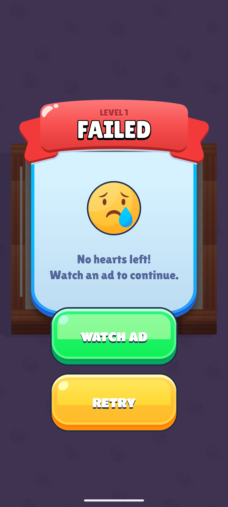
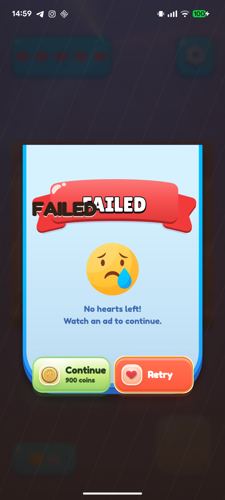
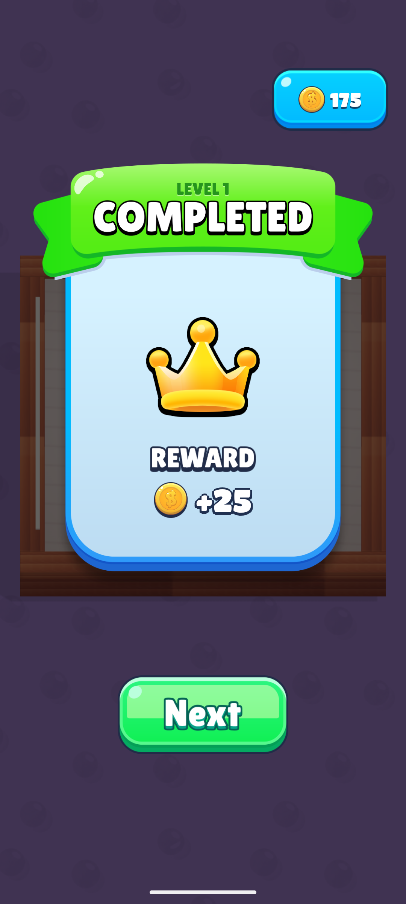
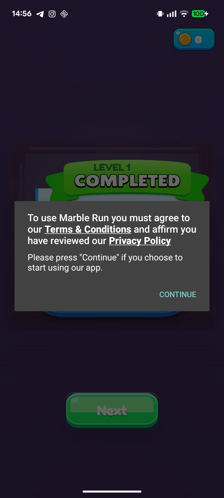
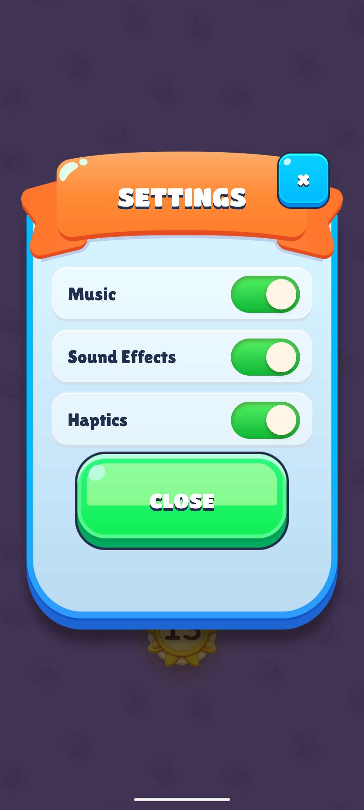
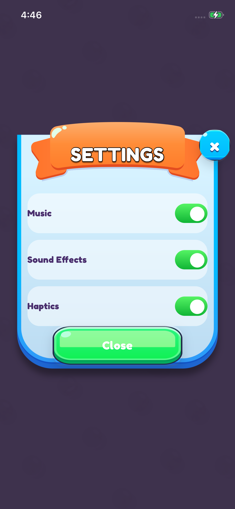
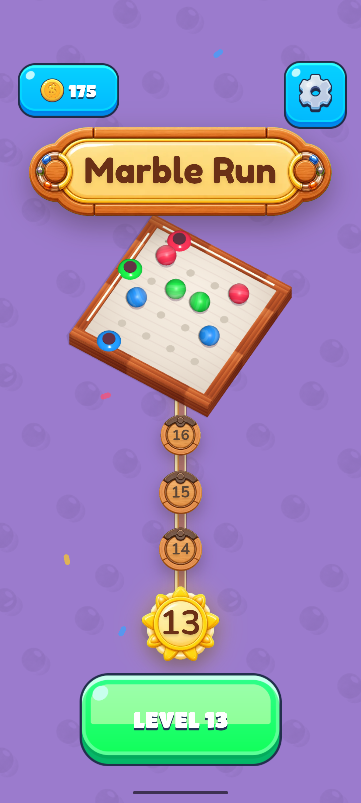
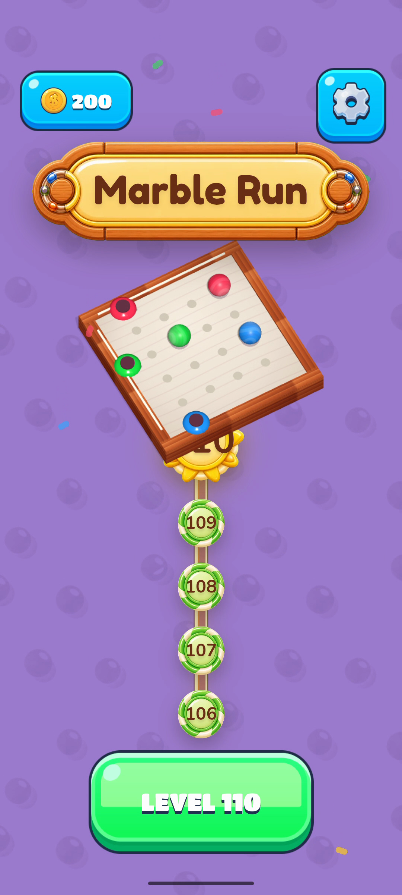

Same-device (Pixel 6a) pairs; v1 = canonical Sugar3D, v2 = fabrikav2 main. Batu-reported items + Pixelsmith judge + conductor review.
| # | Sev | Delta | Evidence | Fix card |
|---|---|---|---|---|
| D1 | P0 | Terms & Conditions consent dialog pops over every screen on fresh install (from SDK/attribution refactor). v1 has no consent dialog. Blocks first-run UX entirely. | v2-win-consent.png | MRV2-27 |
| D2 | P0 | Fail screen wrong: duplicate "FAILED" ghost text; missing "LEVEL n" eyebrow; buttons are "Continue 900 coins"+"Retry" side-by-side (v1: WATCH AD green + RETRY yellow, stacked BELOW card); ribbon narrow; hatched dark backdrop (v1: dimmed board). | v1-lose.png vs v2-lose.png | MRV2-28 |
| D3 | P0 | Win screen: card not centered (Batu); reward "+25" must COUNT DOWN to 0 while coins fly to wallet (v1 behavior); verify LEVEL text placement. | v1-win.png (+ MRV2-21 v1 timing seq in .twf-out/E9l7SETU) | MRV2-28 |
| D4 | P0 | Level transition "utterly broken" (Batu, on device): frame-compare menu→game and win→next vs v1; nothing may morph; match v1 cover timing. | delta/v1/mg-*.png, delta/v2/mgt-*.png, delta/v2/v2-win-trans.mp4 (scratchpad) | MRV2-29 |
| D5 | P1 | Menu banner title: v1 larger with drop shadow; v2 smaller flat. iPhone aspect: sun node overlaps LEVEL button (needs aspect-aware clearance). | v1-home.png; iphone-final.png | MRV2-29 |
| D6 | P1 | Settings: v1 scrim = dimmed purple w/ home visible (v2 near-black); CLOSE all-caps w/ shadow INSIDE card (v2 breaches bottom); X = rounded square on ribbon shoulder; cream toggle knobs; interior padding. | v1-settings.png vs v2-settings.png | MRV2-29 |
| D7 | P1 | iOS font differs per Batu — verify FredokaOne @font-face actually loads in WKWebView; fix path/format if fallback occurs. | Batu report; iphone captures | MRV2-29 |
| D8 | P2 | Harness global still named __FIND_DOG_HARNESS__ — rebrand survivor (breaks tooling expectations). | CDP probe | MRV2-29 |







